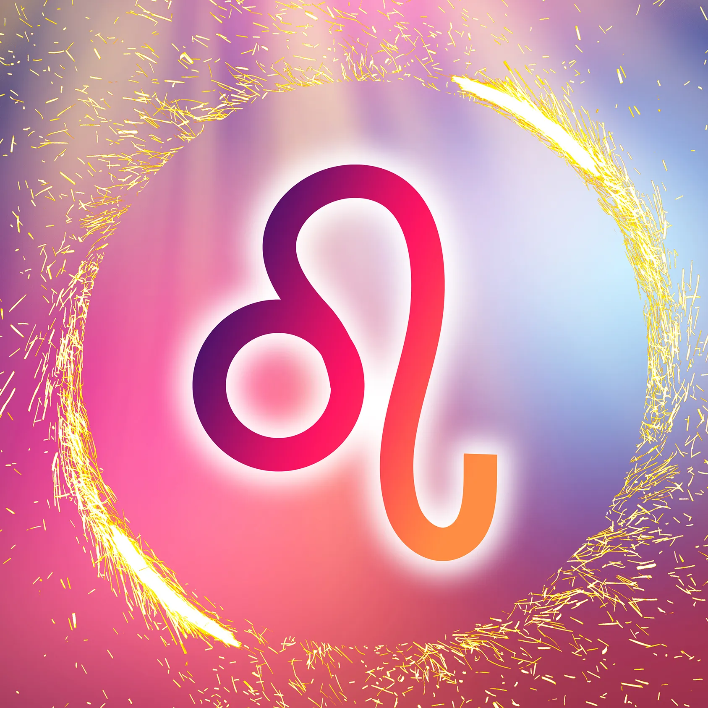
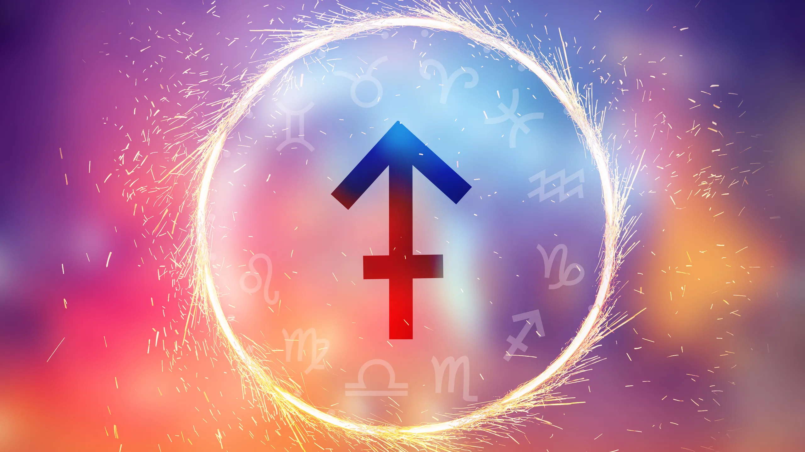

Son Aries las personas que nacen entre el 21 de marzo y el 19 de abril. Durante estas fechas, el Sol se encuentra en su paso sobre la constelación del carnero, que es la que determina la personalidad de este signo del zodiaco. Se caracteriza por ser una persona rebosante de energía y entusiasmo; avanzada y aventurera, adora la libertad, los retos y las nuevas ideas. Los Aries son de acción rápida y confían en su poder, por eso no pierden el tiempo pensando en problemas, de hecho, su manera de resolverlos es la acción. Un aspecto negativo de esta actitud, a veces, es la impulsividad y falta de paciencia, además de arriesgarse demasiado. Tampoco soportan equivocarse ni el fracaso.
Este signo zodiacal pertenece a las fechas del 23 de julio al 22 de agosto. Se les reconoce por su creatividad y la forma en la que pueden comprender sin problema las situaciones de los demás. Aman el lujo y las aventuras, es por eso que se sienten motivados por correr riesgos. Asimismo, destacan por tener una opinión de TODO y de TODOS, en particular de sí mismos, lo cual los lleva a ser muy exigentes.
Sagitario entra en escena cuando el Sol cruza el horizonte entre el 22 de noviembre y el 21 de diciembre. Este signo del zodíaco está regido por el planeta Júpiter, el que simboliza la búsqueda de conocimiento y la expansión de la mente, por ello los nacidos bajo su influjo son personas con una personalidad extrovertida, aventurera y curiosa. Los individuos nacidos bajo el signo de Sagitario se destacan por su espíritu aventurero y su deseo insaciable de conocimiento. Son optimistas por naturaleza y tienen una actitud positiva ante la vida. Les encanta explorar nuevas ideas, lugares y culturas, lo que los convierte en compañeros de viaje ideales. Además, son directos y sinceros en su comunicación, a veces incluso sin filtro.